First let’s get our processed data:
df_simplified <- read_rds(here::here("data", "processed", "active_orgs.rds")) # org and shape/location infoInformation about the data: https://nccs.urban.org/nccs/catalogs/catalog-bmf.html (to get MD file) Here’s an article describing some of the datasets from the IRS 990s. We’re using the Business Master File (BMF). There’s a section titled “Minimum Filing Threshold” that explains a data limitation (and why we’re seeing so many 0’s). See here for more info.
It is not possible to distinguish a true zero from a zero due to not meeting the threshold of $50,000 for gross receipts and just not submitting. See this guide, page 5 in the “minimum filing threshold” section.
It therefore makes sense to remove zero values and to report this caveat that the data is incomplete because many nonprofits that had gross receipts less than 50,000 are not included.
However for the high vs nonhigh asset we could keep these - because zero values would still be less than the threshold regardless.
Adding to this, NA values might be considered ors with gross receipts less than 50000, as organizations are not required to report an amount if they have less than 50000.
First let’s check how many zero values there are for asset amounts.
#df_simplified <-sf::st_as_sf(df_simplified)
df_simplified %>% filter(F990_TOTAL_ASSETS_RECENT==0)%>% nrow()## [1] 2103Now we will check if there are NA values for asset
amounts.
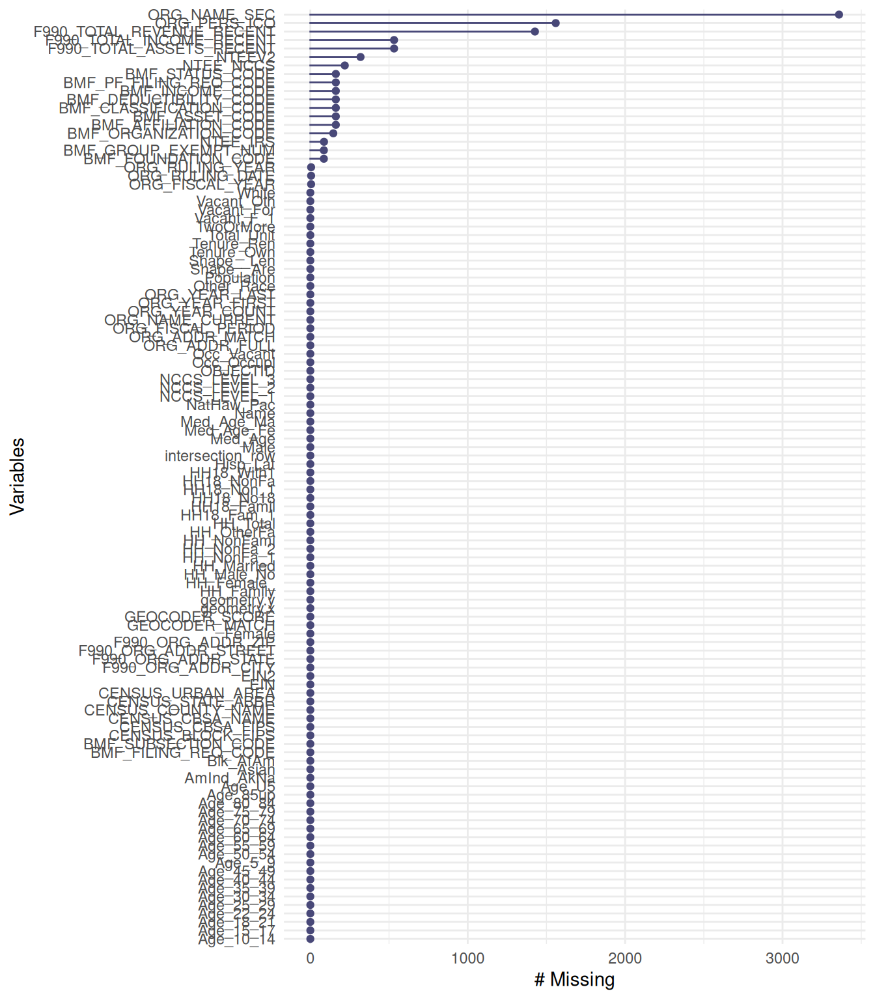
Yes, indeed there are…
NA and zero values may mean the nonprofit did not need to submit to the IRS. It is impossible to know however, if a zero is actually a true zero. NA values could mean something else.
Thus, we will recode asset amount based on a threshold of greater than or equal to 500,000 as high asset and less than 500,000 (including zero) as not high asset. Note we keep our NA values with this recoding.
Note: F990_TOTAL_ASSETS_RECENT was ASSET_AMT with the old files
ASSET CODE/INCOME CODE TABLE Code Description ($) 0 0 1 1 to 9,999 2 10,000 to 24,999 3 25,000 to 99,999 4 100,000 to 499,999 5 500,000 to 999,999 6 1,000,000 to 4,999,999 7 5,000,000 to 9,999,999 8 10,000,000 to 49,999,999 9 50,000,000 to greater
Will also look at Income. Income is less stable because orgs can get large donations at random times.
df_simplified<-df_simplified %>%
#create a variable about high asset amount (threshold being $500,000)
mutate(ASSET_High = case_when(F990_TOTAL_ASSETS_RECENT >= 500000 ~ TRUE,
F990_TOTAL_ASSETS_RECENT < 500000 ~ FALSE))
df_simplified<-df_simplified %>%
#create a variable about high income amount (threshold being $500,000)
mutate(INCOME_High = case_when(F990_TOTAL_INCOME_RECENT >= 500000 ~ TRUE,
F990_TOTAL_INCOME_RECENT < 500000 ~ FALSE))Here we can see the NA values: Seems that these are similar, but slightly different
##
## FALSE TRUE <NA>
## 2686 587 532##
## FALSE TRUE <NA>
## 2726 547 532Now we will replace NA values with False as
well:
df_simplified <- df_simplified %>%
mutate(ASSET_High = replace_na(ASSET_High, FALSE))
#NA values will be coded as not high asset for this analysis (assuming that missing values are not high, because they would likely have a gross receipt of greater than 50000 and would be required to apply (although not everyone will still apply who should))
df_simplified <- df_simplified %>%
mutate(INCOME_High = replace_na(INCOME_High, FALSE))Check that this worked and that there are no NA values now:
##
## FALSE TRUE <NA>
## 3218 587 0##
## FALSE TRUE <NA>
## 3258 547 0Now we will convert these to text as another variable and also create a log version of the asset amount to compress the scale, as plots and analysis may be easier to interpret if there are many values that are high or low.
df_simplified<-df_simplified %>%
mutate(ASSET_High_text = case_when(ASSET_High == TRUE ~ "High Asset",
ASSET_High == FALSE ~ "Low Asset")) %>%
# we will also create new log of asset amount variable
mutate(ASSET_AMT_log = log(F990_TOTAL_ASSETS_RECENT)) # for assets of zero will be neg inf- so likely good to filter out if using this
df_simplified<-df_simplified %>%
mutate(INCOME_High_text = case_when(INCOME_High == TRUE ~ "High INCOME",
INCOME_High == FALSE ~ "Low INCOME")) %>%
# we will also create new log of asset amount variable
mutate(INCOME_AMT_log = log(F990_TOTAL_INCOME_RECENT)) # for assets of zero will be neg inf- so likely good to filter out if using thisNext we will modify the data to include a variable about the percentage of African American/Black people.
# create new Percent_AA variable by converting
# Blk_Afam (was `Normalized African American Population`) variable
# into a percentage and rounding
#dictionary shows: Blk_AfAm = Black or African American alone population (P3)
# Population = Total population (P3) https://data.baltimorecity.gov/datasets/baltimore::neighborhood-statistical-area-nsa-boundaries/about
df_simplified<-df_simplified %>%
mutate(Percent_AA =
round(Blk_AfAm/Population*100, digits = 2)) %>%
# create new Majority_AA variable that indicates if Percent_AA is greater than 50% or not
mutate(Majority_AA = case_when(
Percent_AA >= 50 ~ "Yes",
Percent_AA < 50 ~ "No")) %>%
# create a new variable about this in text
mutate(Neighborhood = case_when(
Percent_AA >= 50 ~ "Majority\nBlack",
Percent_AA < 50 ~ "Majority\nNon-Black")) %>%
# make this a factor and order by level appearance in the data
mutate(Neighborhood = as_factor(Neighborhood),
Neighborhood = forcats::fct_inorder(Neighborhood))We first remove organizations with zero assets because we don’t know if zero values are real. If assets are under 50,000, organizations can report as zero also.
Similarly, NA values could be anything between 0 and less than 50,000. Thus we aren’t sure what those asset amounts are.
# make a new dataframe without zeros and NA asset amounts
df_simplified_no_zero<-df_simplified %>%
drop_na(F990_TOTAL_ASSETS_RECENT) %>% #redundant but shows we are dropping NA values
filter(F990_TOTAL_ASSETS_RECENT>0) # F990_TOTAL_ASSETS_RECENT must be greater than zero
# Check if we have any zero values left for income
#df_simplified_no_zero %>% filter(F990_TOTAL_INCOME_RECENT == 0) # yes we do
# do the same for income
df_simplified_no_zero_income <-df_simplified %>%
drop_na(F990_TOTAL_INCOME_RECENT) %>% #redundant but shows we are dropping NA values
filter(F990_TOTAL_INCOME_RECENT>0) Without removal (except NAs)
df_simplified_no_removal<-df_simplified %>%
drop_na(F990_TOTAL_ASSETS_RECENT) #dropping NA values
any(is.na(df_simplified_no_removal$F990_TOTAL_INCOME_RECENT)) # looks like we dropped the NA values for income already## [1] FALSETurns out this doesn’t really work well, as we don’t know if the values of 0 are real or for orgs that had a gross receipt of below 50,000 and didn’t have to report total assets. So we will stick with our removal.
To provide more information to readers about what the nonprofits do, we will convert the National Taxonomy of Exempt Entities (NTEE) codes based on this and this (see page 15).
The NTEE_IRS variable appears to be the most complete
NTEE_IRS was NTEE_CD in the older raw files
df_simplified <-df_simplified %>%
mutate(NTEE_text = case_when(
str_starts(NTEE_IRS, pattern = "A")~ "Arts", # if NTEE_IRS starts with A make new variable value "Arts" etc.
str_starts(NTEE_IRS, pattern = "B") ~ "Education",
str_starts(NTEE_IRS, pattern = "C|D") ~ "Environment/Animals", # if NTEE_IRS value starts with C or D make new variable value "Environment/Animals"
str_starts(NTEE_IRS, pattern = "E|F|G|H") ~ "Health",
str_starts(NTEE_IRS, pattern = "I|J|K|L|M|N|O|P") ~ "Human Services",
str_starts(NTEE_IRS, pattern = "Q") ~ "International Affairs",
str_starts(NTEE_IRS, pattern = "R|S|T|U|V|W") ~ "Societal Benefit",
str_starts(NTEE_IRS, pattern = "X") ~ "Religious",
is.na(NTEE_IRS) ~ "Unclassified",
TRUE ~ "Other")) #everything else will be OtherAlso for the no zero data:
df_simplified_no_zero <-df_simplified_no_zero %>%
mutate(NTEE_text = case_when(
str_starts(NTEE_IRS, pattern = "A")~ "Arts", # if NTEE_IRS starts with A make new variable value "Arts" etc.
str_starts(NTEE_IRS, pattern = "B") ~ "Education",
str_starts(NTEE_IRS, pattern = "C|D") ~ "Environment/Animals", # if NTEE_IRS value starts with C or D make new variable value "Environment/Animals"
str_starts(NTEE_IRS, pattern = "E|F|G|H") ~ "Health",
str_starts(NTEE_IRS, pattern = "I|J|K|L|M|N|O|P") ~ "Human Services",
str_starts(NTEE_IRS, pattern = "Q") ~ "International Affairs",
str_starts(NTEE_IRS, pattern = "R|S|T|U|V|W") ~ "Societal Benefit",
str_starts(NTEE_IRS, pattern = "X") ~ "Religious",
is.na(NTEE_IRS) ~ "Unclassified",
TRUE~ "Other")) # everything else will be Other
df_simplified_no_zero_income <-df_simplified_no_zero_income %>%
mutate(NTEE_text = case_when(
str_starts(NTEE_IRS, pattern = "A")~ "Arts", # if NTEE_IRS starts with A make new variable value "Arts" etc.
str_starts(NTEE_IRS, pattern = "B") ~ "Education",
str_starts(NTEE_IRS, pattern = "C|D") ~ "Environment/Animals", # if NTEE_IRS value starts with C or D make new variable value "Environment/Animals"
str_starts(NTEE_IRS, pattern = "E|F|G|H") ~ "Health",
str_starts(NTEE_IRS, pattern = "I|J|K|L|M|N|O|P") ~ "Human Services",
str_starts(NTEE_IRS, pattern = "Q") ~ "International Affairs",
str_starts(NTEE_IRS, pattern = "R|S|T|U|V|W") ~ "Societal Benefit",
str_starts(NTEE_IRS, pattern = "X") ~ "Religious",
is.na(NTEE_IRS) ~ "Unclassified",
TRUE~ "Other")) # everything else will be OtherFirst without log normalization figure:
df_simplified_no_zero %>%
ggplot(aes(y = F990_TOTAL_ASSETS_RECENT, x = Percent_AA)) +
geom_point() + geom_smooth(method = "loess")## `geom_smooth()` using formula = 'y ~ x'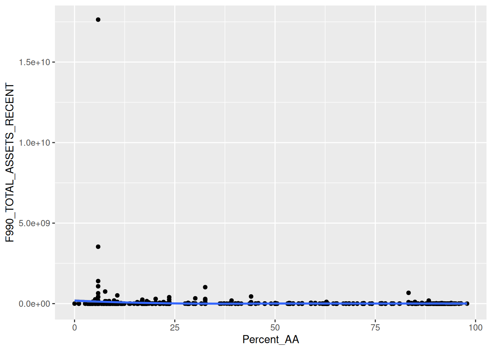
df_simplified_no_zero %>%
ggplot(aes(y = F990_TOTAL_INCOME_RECENT, x = Percent_AA)) +
geom_point() + geom_smooth(method = "loess")## `geom_smooth()` using formula = 'y ~ x'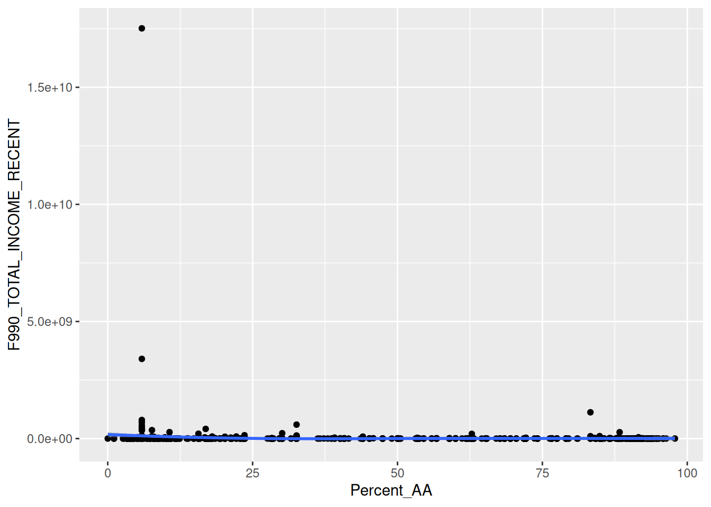
We can see that some of the dat points are much higher and this makes it challenging to see the lower data values.Now let’s look at normalized version.
Overall log Asset and Income amount figure:
df_simplified_no_zero %>%
ggplot(aes(y = ASSET_AMT_log, x = Percent_AA)) +
geom_point() + geom_smooth(method = "loess")## `geom_smooth()` using formula = 'y ~ x'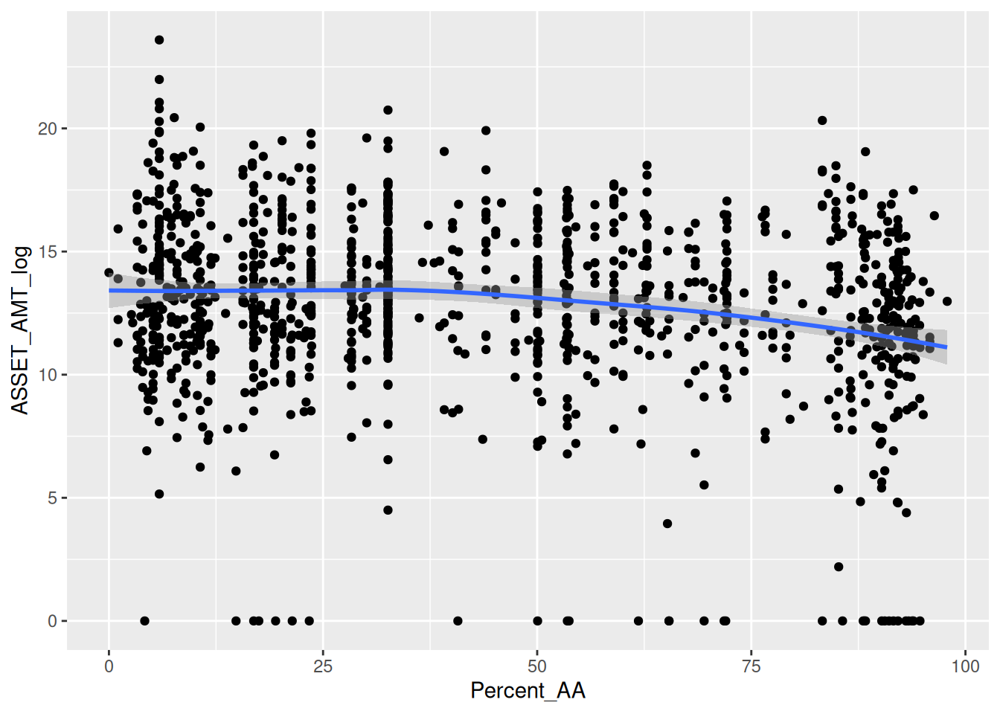
df_simplified_no_zero_income %>%
ggplot(aes(y = INCOME_AMT_log, x = Percent_AA)) +
geom_point() + geom_smooth(method = "loess")## `geom_smooth()` using formula = 'y ~ x'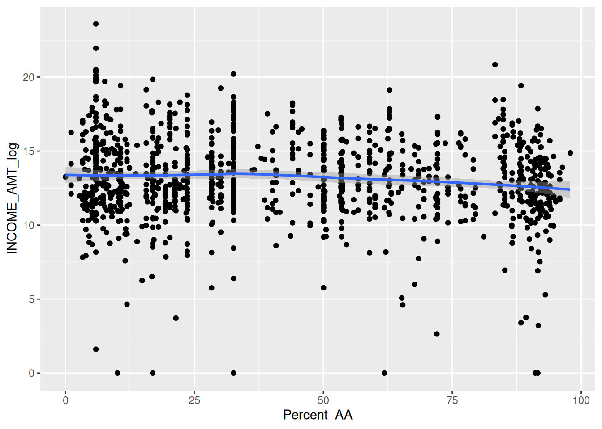
Look at log asset data for each NTEE type- remember the caveat that there are many organizations that are not included because of NA or zero value F990_TOTAL_ASSETS_RECENT. However, still we can see that some categories show a trend towards lower amount of assets even with this limited data.
df_simplified_no_zero %>% drop_na(NTEE_text) %>%
ggplot(aes(y = ASSET_AMT_log, x = Neighborhood)) +
geom_boxplot()+ geom_jitter(width = .08) +
facet_wrap(~ NTEE_text, scales = "free_y") +
geom_smooth(method = "lm", se=TRUE, aes(group=1))## `geom_smooth()` using formula = 'y ~ x'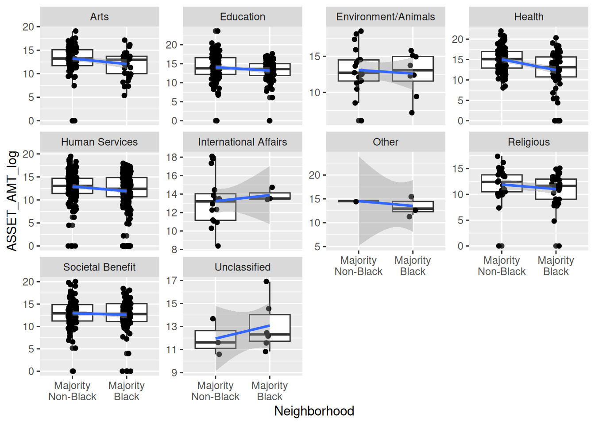
df_simplified_no_zero_income %>% drop_na(NTEE_text) %>%
ggplot(aes(y = INCOME_AMT_log, x = Neighborhood)) +
geom_boxplot()+ geom_jitter(width = .08) +
facet_wrap(~ NTEE_text, scales = "free_y") +
geom_smooth(method = "lm", se=TRUE, aes(group=1))## `geom_smooth()` using formula = 'y ~ x'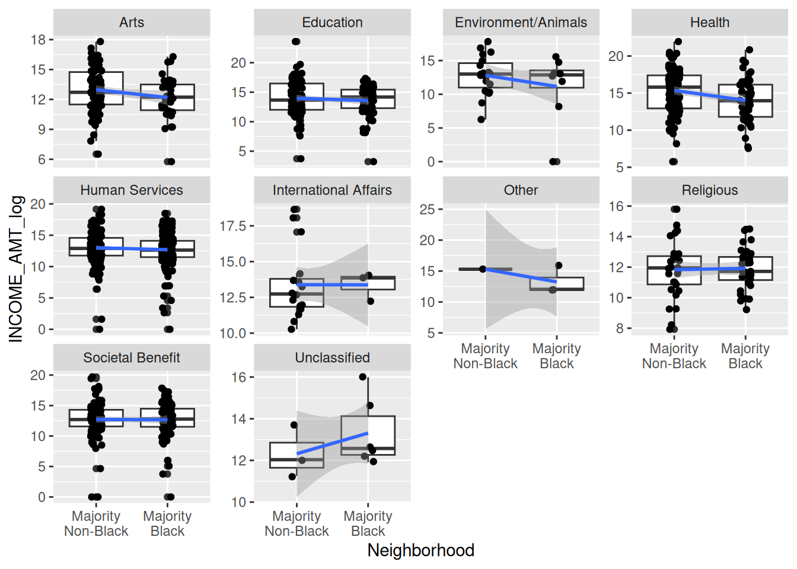
Compare all organizations by neighborhood AA status for log asset data. remember the caveat that there are many organizations that are not included because of NA or zero value F990_TOTAL_ASSETS_RECENT
df_simplified_no_zero %>%
ggplot(aes(y = ASSET_AMT_log, x = Neighborhood)) +
geom_boxplot()+ geom_jitter(width = .08) + geom_smooth(method = "lm", se=TRUE, aes(group=1))## `geom_smooth()` using formula = 'y ~ x'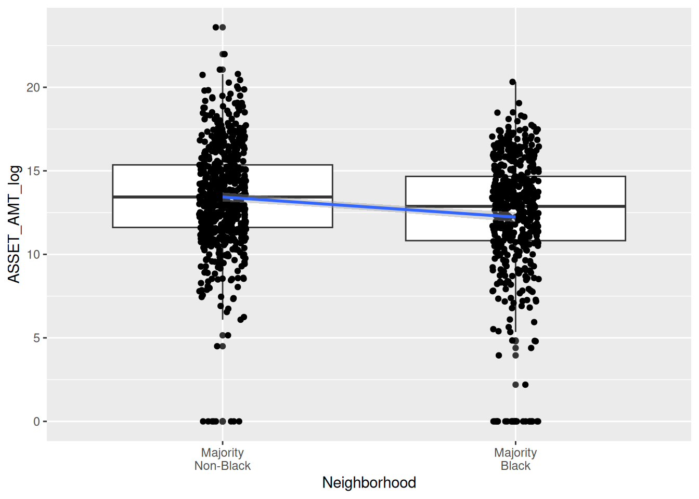
df_simplified_no_zero_income %>%
ggplot(aes(y = INCOME_AMT_log, x = Neighborhood)) +
geom_boxplot()+ geom_jitter(width = .08) + geom_smooth(method = "lm", se=TRUE, aes(group=1))## `geom_smooth()` using formula = 'y ~ x'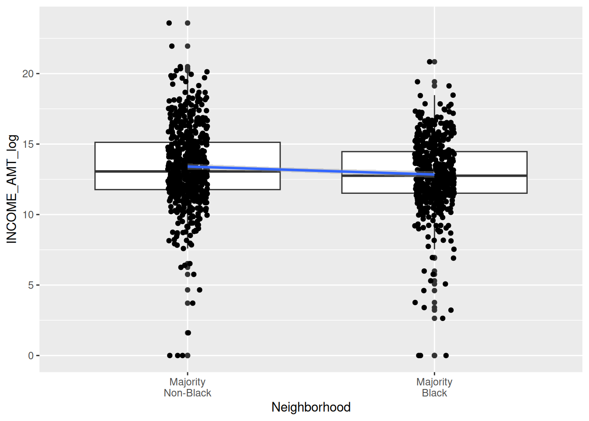
#nonparametric test - because the residuals looked skewed in the above qqplots
cor.test(df_simplified_no_zero$ASSET_AMT_log, df_simplified_no_zero$Percent_AA, method = "spearman", exact = FALSE)##
## Spearman's rank correlation rho
##
## data: df_simplified_no_zero$ASSET_AMT_log and df_simplified_no_zero$Percent_AA
## S = 301265222, p-value = 1.021e-05
## alternative hypothesis: true rho is not equal to 0
## sample estimates:
## rho
## -0.1286076cor.test(df_simplified_no_zero$INCOME_AMT_log, df_simplified_no_zero$Percent_AA, method = "spearman", exact = FALSE)##
## Spearman's rank correlation rho
##
## data: df_simplified_no_zero$INCOME_AMT_log and df_simplified_no_zero$Percent_AA
## S = 290093813, p-value = 0.002978
## alternative hypothesis: true rho is not equal to 0
## sample estimates:
## rho
## -0.08675701## Rows: 1,170
## Columns: 120
## $ EIN2 <chr> "EIN-52-0595110", "EIN-52-0591656", "EIN-53-…
## $ EIN <dbl> 520595110, 520591656, 530196602, 590683252, …
## $ NTEE_IRS <chr> "B430", "E220", "E220", "E240", "E220", "B43…
## $ NTEE_NCCS <chr> "B43", "E220", "E220", "D40", "E220", "B43",…
## $ NTEEV2 <chr> "UNI-B43-RG", NA, NA, "ENV-D40-RG", NA, "UNI…
## $ NCCS_LEVEL_1 <chr> "501C3 CHARITY", "501C3 CHARITY", "501C3 CHA…
## $ NCCS_LEVEL_2 <chr> "O", "O", "O", "O", "O", "O", "O", "O", "S",…
## $ NCCS_LEVEL_3 <chr> "ED", "HE", "HE", "EN", "HE", "ED", "HE", "H…
## $ F990_TOTAL_REVENUE_RECENT <dbl> 8434336000, 3309691627, 551873331, 591863741…
## $ F990_TOTAL_INCOME_RECENT <dbl> 17516457000, 3403178366, 552142974, 68828878…
## $ F990_TOTAL_ASSETS_RECENT <dbl> 17635700000, 3534358977, 1400679075, 1076831…
## $ F990_ORG_ADDR_CITY <chr> "BALTIMORE", "BALTIMORE", "BALTIMORE", "BALT…
## $ F990_ORG_ADDR_STATE <chr> "MD", "MD", "MD", "MD", "MD", "MD", "MD", "M…
## $ F990_ORG_ADDR_ZIP <chr> "21211-2226", "21211-0000", "21211-2226", "2…
## $ F990_ORG_ADDR_STREET <chr> "3910 KESWICK ROAD N4327B", "3910 KESWICK RD…
## $ CENSUS_CBSA_FIPS <dbl> 12580, 12580, 12580, 12580, 12580, 12580, 12…
## $ CENSUS_CBSA_NAME <chr> "Baltimore-Columbia-Towson, MD", "Baltimore-…
## $ CENSUS_BLOCK_FIPS <dbl> 2.451013e+14, 2.451013e+14, 2.451013e+14, 2.…
## $ CENSUS_URBAN_AREA <chr> "U", "U", "U", "U", "U", "U", "U", "U", "U",…
## $ CENSUS_STATE_ABBR <chr> "MD", "MD", "MD", "MD", "MD", "MD", "MD", "M…
## $ CENSUS_COUNTY_NAME <chr> "Baltimore city", "Baltimore city", "Baltimo…
## $ ORG_ADDR_FULL <chr> "3910 KESWICK ROAD N4327B,BALTIMORE,MD,21211…
## $ ORG_ADDR_MATCH <chr> "3910 Keswick Rd, Baltimore, Maryland, 21211…
## $ GEOCODER_SCORE <dbl> 98.54, 98.96, 97.66, 98.89, 100.00, 100.00, …
## $ GEOCODER_MATCH <chr> "M", "M", "M", "M", "M", "M", "M", "M", "M",…
## $ BMF_SUBSECTION_CODE <dbl> 3, 3, 3, 3, 3, 3, 3, 3, 3, 3, 3, 3, 3, 3, 3,…
## $ BMF_STATUS_CODE <dbl> 1, 1, 1, 1, 1, 1, 1, 1, 1, 1, 1, 1, 1, 1, 1,…
## $ BMF_PF_FILING_REQ_CODE <dbl> 0, 0, 0, 0, 0, 0, 0, 0, 0, 0, 0, 0, 0, 0, 0,…
## $ BMF_ORGANIZATION_CODE <dbl> 1, 1, 1, 1, 1, 1, 1, 1, 1, 1, 1, 1, 1, 1, 1,…
## $ BMF_INCOME_CODE <dbl> 9, 9, 9, 9, 9, 9, 9, 9, 9, 9, 9, 9, 9, 9, 9,…
## $ BMF_GROUP_EXEMPT_NUM <dbl> 8238, 0, 0, 0, 0, 0, 0, 0, 0, 0, 0, 0, 0, 0,…
## $ BMF_FOUNDATION_CODE <dbl> 11, 12, 12, 12, 12, 11, 12, 12, 15, 15, 12, …
## $ BMF_FILING_REQ_CODE <dbl> 1, 1, 1, 1, 1, 1, 1, 1, 1, 1, 1, 1, 1, 1, 1,…
## $ BMF_DEDUCTIBILITY_CODE <dbl> 1, 1, 1, 1, 1, 1, 1, 1, 1, 1, 1, 1, 1, 1, 1,…
## $ BMF_CLASSIFICATION_CODE <dbl> 1000, 1200, 1000, 1000, 1000, 1000, 1000, 12…
## $ BMF_ASSET_CODE <dbl> 9, 9, 9, 9, 9, 9, 9, 9, 9, 9, 9, 9, 9, 9, 9,…
## $ BMF_AFFILIATION_CODE <dbl> 6, 3, 3, 3, 3, 3, 3, 3, 3, 3, 3, 3, 1, 3, 3,…
## $ ORG_RULING_DATE <chr> "1935-01", "1948-02", "1936-04", "1942-05", …
## $ ORG_FISCAL_YEAR <dbl> 2024, 2024, 2024, 2024, 2024, 2024, 2024, 20…
## $ ORG_RULING_YEAR <dbl> 1935, 1948, 1936, 1942, 1949, 1993, 1936, 19…
## $ ORG_YEAR_FIRST <dbl> 1989, 1989, 1989, 1989, 1989, 1989, 1989, 19…
## $ ORG_YEAR_LAST <dbl> 2024, 2024, 2024, 2024, 2024, 2024, 2024, 20…
## $ ORG_YEAR_COUNT <dbl> 36, 36, 36, 36, 36, 36, 36, 36, 24, 24, 27, …
## $ ORG_PERS_ICO <chr> NA, NA, NA, NA, "% JUSTIN C DEIBEL", "% JOHN…
## $ ORG_NAME_SEC <chr> NA, NA, NA, NA, NA, NA, NA, NA, NA, NA, NA, …
## $ ORG_NAME_CURRENT <chr> "JOHNS HOPKINS UNIVERSITY", "THE JOHNS HOPKI…
## $ ORG_FISCAL_PERIOD <dbl> 1, 2, 4, 5, 9, 4, 2, 10, 8, 12, 5, 7, 6, 9, …
## $ geometry.x <POINT [°]> POINT (-76.62835 39.3358), POINT (-76.…
## $ intersection_row <int> 142, 142, 142, 142, 108, 173, 168, 142, 270,…
## $ OBJECTID <int> 142, 142, 142, 142, 108, 173, 168, 142, 270,…
## $ Name <chr> "Hampden", "Hampden", "Hampden", "Hampden", …
## $ Population <int> 7346, 7346, 7346, 7346, 7171, 3158, 1077, 73…
## $ White <int> 5951, 5951, 5951, 5951, 2740, 1417, 130, 595…
## $ Blk_AfAm <int> 432, 432, 432, 432, 2336, 241, 897, 432, 42,…
## $ AmInd_AkNa <int> 18, 18, 18, 18, 17, 0, 1, 18, 1, 0, 18, 18, …
## $ Asian <int> 368, 368, 368, 368, 1295, 1127, 5, 368, 51, …
## $ NatHaw_Pac <int> 0, 0, 0, 0, 6, 1, 0, 0, 0, 0, 0, 0, 0, 1, 0,…
## $ Other_Race <int> 85, 85, 85, 85, 188, 138, 15, 85, 1, 22, 85,…
## $ TwoOrMore <int> 492, 492, 492, 492, 589, 234, 29, 492, 41, 3…
## $ Hisp_Lat <int> 312, 312, 312, 312, 510, 341, 27, 312, 17, 4…
## $ Male <int> 3562, 3562, 3562, 3562, 3536, 1233, 534, 356…
## $ Female <int> 3784, 3784, 3784, 3784, 3635, 1925, 543, 378…
## $ Total_Unit <int> 4318, 4318, 4318, 4318, 5693, 26, 531, 4318,…
## $ Occ_Occupi <int> 3925, 3925, 3925, 3925, 4765, 23, 489, 3925,…
## $ Occ_Vacant <int> 393, 393, 393, 393, 928, 3, 42, 393, 16, 82,…
## $ Tenure_Own <int> 2023, 2023, 2023, 2023, 209, 17, 137, 2023, …
## $ Tenure_Ren <int> 1902, 1902, 1902, 1902, 4556, 6, 352, 1902, …
## $ Vacant_For <int> 162, 162, 162, 162, 820, 0, 5, 162, 16, 56, …
## $ Vacant_F_1 <int> 40, 40, 40, 40, 29, 0, 13, 40, 0, 0, 40, 40,…
## $ Vacant_Oth <int> 191, 191, 191, 191, 79, 3, 24, 191, 0, 26, 1…
## $ HH_Total <int> 3925, 3925, 3925, 3925, 4765, 23, 489, 3925,…
## $ HH_Family <int> 1495, 1495, 1495, 1495, 801, 16, 190, 1495, …
## $ HH_Married <int> 1147, 1147, 1147, 1147, 509, 14, 66, 1147, 4…
## $ HH_OtherFa <int> 348, 348, 348, 348, 292, 2, 124, 348, 16, 33…
## $ HH_Male_No <int> 115, 115, 115, 115, 90, 0, 29, 115, 2, 10, 1…
## $ HH_Female_ <int> 233, 233, 233, 233, 202, 2, 95, 233, 14, 23,…
## $ HH_NonFami <int> 2430, 2430, 2430, 2430, 3964, 7, 299, 2430, …
## $ HH_NonFa_1 <int> 1635, 1635, 1635, 1635, 3200, 4, 273, 1635, …
## $ HH_NonFa_2 <int> 795, 795, 795, 795, 764, 3, 26, 795, 45, 35,…
## $ HH18_With1 <int> 528, 528, 528, 528, 267, 5, 88, 528, 27, 18,…
## $ HH18_Famil <int> 519, 519, 519, 519, 261, 5, 88, 519, 24, 18,…
## $ HH18_NonFa <int> 9, 9, 9, 9, 6, 0, 0, 9, 3, 0, 9, 9, 4, 6, 1,…
## $ HH18_No18 <int> 3397, 3397, 3397, 3397, 4498, 18, 401, 3397,…
## $ HH18_Fam_1 <int> 976, 976, 976, 976, 540, 11, 102, 976, 38, 3…
## $ HH18_Non_1 <int> 2421, 2421, 2421, 2421, 3958, 7, 299, 2421, …
## $ Age_U5 <int> 358, 358, 358, 358, 163, 3, 19, 358, 6, 11, …
## $ Age_5_9 <int> 189, 189, 189, 189, 95, 3, 35, 189, 8, 5, 18…
## $ Age_10_14 <int> 139, 139, 139, 139, 78, 4, 45, 139, 2, 3, 13…
## $ Age_15_17 <int> 33, 33, 33, 33, 19, 2, 13, 33, 2, 3, 33, 33,…
## $ Age_18_21 <int> 123, 123, 123, 123, 241, 2382, 29, 123, 6, 2…
## $ Age_22_24 <int> 266, 266, 266, 266, 1056, 666, 22, 266, 24, …
## $ Age_25_29 <int> 1123, 1123, 1123, 1123, 1943, 62, 29, 1123, …
## $ Age_30_34 <int> 1364, 1364, 1364, 1364, 1309, 3, 60, 1364, 4…
## $ Age_35_39 <int> 866, 866, 866, 866, 719, 1, 55, 866, 20, 58,…
## $ Age_40_44 <int> 497, 497, 497, 497, 373, 0, 43, 497, 33, 39,…
## $ Age_45_49 <int> 369, 369, 369, 369, 277, 1, 28, 369, 10, 10,…
## $ Age_50_54 <int> 331, 331, 331, 331, 269, 5, 38, 331, 9, 25, …
## $ Age_55_59 <int> 171, 171, 171, 171, 106, 0, 57, 171, 19, 10,…
## $ Age_60_64 <int> 384, 384, 384, 384, 179, 7, 95, 384, 9, 36, …
## $ Age_65_69 <int> 300, 300, 300, 300, 109, 9, 142, 300, 26, 8,…
## $ Age_70_74 <int> 269, 269, 269, 269, 48, 6, 120, 269, 14, 5, …
## $ Age_75_79 <int> 175, 175, 175, 175, 27, 1, 67, 175, 29, 2, 1…
## $ Age_80_84 <int> 99, 99, 99, 99, 17, 0, 61, 99, 11, 1, 99, 99…
## $ Age_85up <int> 83, 83, 83, 83, 14, 1, 78, 83, 12, 4, 83, 83…
## $ Med_Age <dbl> 37.4, 37.4, 37.4, 37.4, 30.3, 20.8, 55.6, 37…
## $ Med_Age_Ma <dbl> 38.4, 38.4, 38.4, 38.4, 31.3, 21.2, 53.8, 38…
## $ Med_Age_Fe <dbl> 37.1, 37.1, 37.1, 37.1, 29.6, 20.8, 57.7, 37…
## $ Shape__Are <dbl> 17132059, 17132059, 17132059, 17132059, 1135…
## $ Shape__Len <dbl> 19321.006, 19321.006, 19321.006, 19321.006, …
## $ geometry.y <MULTIPOLYGON [US_survey_foot]> MULTIPOLYGON (((14…
## $ ASSET_High <lgl> TRUE, TRUE, TRUE, TRUE, TRUE, TRUE, TRUE, TR…
## $ INCOME_High <lgl> TRUE, TRUE, TRUE, TRUE, TRUE, TRUE, TRUE, TR…
## $ ASSET_High_text <chr> "High Asset", "High Asset", "High Asset", "H…
## $ ASSET_AMT_log <dbl> 23.59319, 21.98580, 21.06022, 20.79729, 20.7…
## $ INCOME_High_text <chr> "High INCOME", "High INCOME", "High INCOME",…
## $ INCOME_AMT_log <dbl> 23.58641, 21.94798, 20.12932, 20.34972, 20.2…
## $ Percent_AA <dbl> 5.88, 5.88, 5.88, 5.88, 32.58, 7.63, 83.29, …
## $ Majority_AA <chr> "No", "No", "No", "No", "No", "No", "Yes", "…
## $ Neighborhood <fct> Majority
## Non-Black, Majority
## Non-Black, Majo…
## $ NTEE_text <chr> "Education", "Health", "Health", "Health", "…First we will remove geo data to make it easier to see results:
df_simplified_no_zero <-df_simplified_no_zero %>% st_drop_geometry()
df_simplified <-df_simplified %>% st_drop_geometry()
df_simplified_no_zero_income <-df_simplified_no_zero_income %>% st_drop_geometry()First create data to make visualization easier caveat for the data: that there are many organizations that are not included because of NA or zero value F990_TOTAL_ASSETS_RECENT
First let’s get a count of each - NOTE we are keeping zero values and NA as low asset!
## # A tibble: 4 × 3
## ASSET_High_text Neighborhood n
## <chr> <fct> <int>
## 1 High Asset "Majority\nNon-Black" 352
## 2 High Asset "Majority\nBlack" 235
## 3 Low Asset "Majority\nNon-Black" 1279
## 4 Low Asset "Majority\nBlack" 1939df_simplified <-df_simplified %>%
drop_na(Neighborhood)
df_simplified %>%
count(ASSET_High_text, Neighborhood)## # A tibble: 4 × 3
## ASSET_High_text Neighborhood n
## <chr> <fct> <int>
## 1 High Asset "Majority\nNon-Black" 352
## 2 High Asset "Majority\nBlack" 235
## 3 Low Asset "Majority\nNon-Black" 1279
## 4 Low Asset "Majority\nBlack" 1939## # A tibble: 4 × 3
## INCOME_High_text Neighborhood n
## <chr> <fct> <int>
## 1 High INCOME "Majority\nNon-Black" 319
## 2 High INCOME "Majority\nBlack" 228
## 3 Low INCOME "Majority\nNon-Black" 1312
## 4 Low INCOME "Majority\nBlack" 1946High_asset_data <-df_simplified %>%
group_by(ASSET_High_text, Neighborhood) %>%
count()
High_asset_data## # A tibble: 4 × 3
## # Groups: ASSET_High_text, Neighborhood [4]
## ASSET_High_text Neighborhood n
## <chr> <fct> <int>
## 1 High Asset "Majority\nNon-Black" 352
## 2 High Asset "Majority\nBlack" 235
## 3 Low Asset "Majority\nNon-Black" 1279
## 4 Low Asset "Majority\nBlack" 1939High_income_data <-df_simplified %>%
group_by(INCOME_High_text, Neighborhood) %>%
count()
High_income_data## # A tibble: 4 × 3
## # Groups: INCOME_High_text, Neighborhood [4]
## INCOME_High_text Neighborhood n
## <chr> <fct> <int>
## 1 High INCOME "Majority\nNon-Black" 319
## 2 High INCOME "Majority\nBlack" 228
## 3 Low INCOME "Majority\nNon-Black" 1312
## 4 Low INCOME "Majority\nBlack" 1946Create percentage variable for each category:
High_asset_data <- High_asset_data %>%
group_by(Neighborhood) %>%
mutate(Percent_AA_cat = round(n/sum(n)*100))
High_asset_data## # A tibble: 4 × 4
## # Groups: Neighborhood [2]
## ASSET_High_text Neighborhood n Percent_AA_cat
## <chr> <fct> <int> <dbl>
## 1 High Asset "Majority\nNon-Black" 352 22
## 2 High Asset "Majority\nBlack" 235 11
## 3 Low Asset "Majority\nNon-Black" 1279 78
## 4 Low Asset "Majority\nBlack" 1939 89High_income_data <- High_income_data %>%
group_by(Neighborhood) %>%
mutate(Percent_AA_cat = round(n/sum(n)*100))
High_income_data## # A tibble: 4 × 4
## # Groups: Neighborhood [2]
## INCOME_High_text Neighborhood n Percent_AA_cat
## <chr> <fct> <int> <dbl>
## 1 High INCOME "Majority\nNon-Black" 319 20
## 2 High INCOME "Majority\nBlack" 228 10
## 3 Low INCOME "Majority\nNon-Black" 1312 80
## 4 Low INCOME "Majority\nBlack" 1946 90Visuals…of the above data:
High_asset_data %>%
ggplot(aes(x= Neighborhood, y = Percent_AA_cat, fill = ASSET_High_text)) +
geom_col(position = position_dodge(width = .9))+
scale_y_continuous(labels = function(x) paste0(x, "%")) +
ylim(0,100) +
geom_text(aes(label = paste0(Percent_AA_cat, "%")), position = position_dodge(width = .8), vjust = -.5, hjust = -.5) +
ylab("Percent of Neighborhood Category") +
theme_linedraw() +
scale_fill_grey() +
theme(legend.title = element_blank()) + coord_flip()## Scale for y is already present.
## Adding another scale for y, which will replace the existing scale.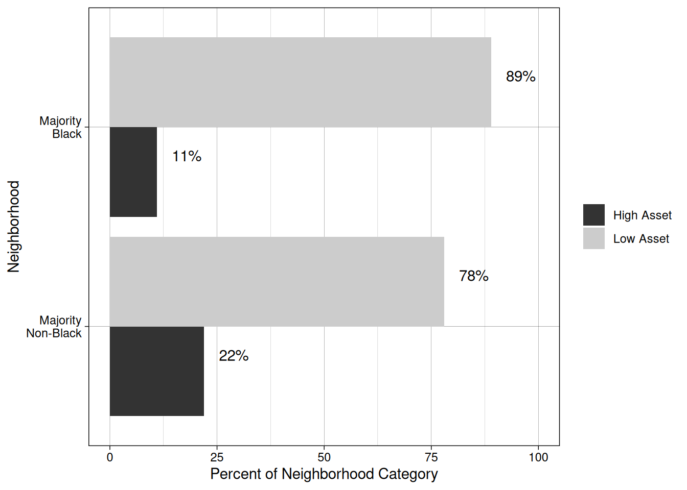
High_income_data %>%
ggplot(aes(x= Neighborhood, y = Percent_AA_cat, fill = INCOME_High_text)) +
geom_col(position = position_dodge(width = .9))+
scale_y_continuous(labels = function(x) paste0(x, "%")) +
ylim(0,100) +
geom_text(aes(label = paste0(Percent_AA_cat, "%")), position = position_dodge(width = .8), vjust = 0, hjust = -.5) +
ylab("Percent of Neighborhood Category") +
theme_linedraw() +
scale_fill_grey() +
theme(legend.title = element_blank()) + coord_flip()## Scale for y is already present.
## Adding another scale for y, which will replace the existing scale.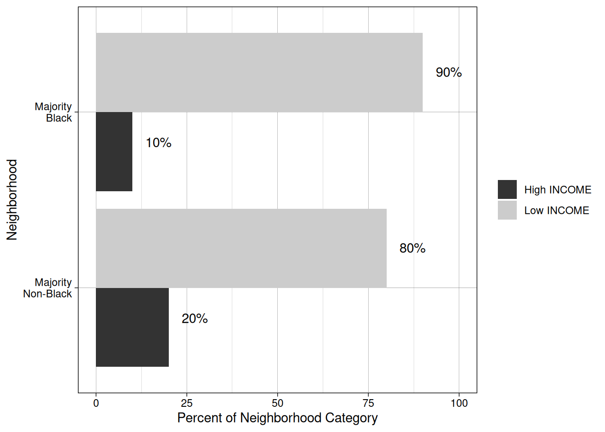
this includes all organizations including those with NA valuesFirst create data to make visualization easier.
High_asset_data <-df_simplified %>%
group_by(ASSET_High_text, Neighborhood, NTEE_text) %>%
count()
High_asset_data## # A tibble: 40 × 4
## # Groups: ASSET_High_text, Neighborhood, NTEE_text [40]
## ASSET_High_text Neighborhood NTEE_text n
## <chr> <fct> <chr> <int>
## 1 High Asset "Majority\nNon-Black" Arts 48
## 2 High Asset "Majority\nNon-Black" Education 59
## 3 High Asset "Majority\nNon-Black" Environment/Animals 8
## 4 High Asset "Majority\nNon-Black" Health 71
## 5 High Asset "Majority\nNon-Black" Human Services 88
## 6 High Asset "Majority\nNon-Black" International Affairs 8
## 7 High Asset "Majority\nNon-Black" Other 1
## 8 High Asset "Majority\nNon-Black" Religious 12
## 9 High Asset "Majority\nNon-Black" Societal Benefit 56
## 10 High Asset "Majority\nNon-Black" Unclassified 1
## # ℹ 30 more rowscontingency_table <- table( df_simplified$Majority_AA, df_simplified$ASSET_High_text)
print(contingency_table)##
## High Asset Low Asset
## No 352 1279
## Yes 235 1939##
## Pearson's Chi-squared test with Yates' continuity correction
##
## data: contingency_table
## X-squared = 82.058, df = 1, p-value < 2.2e-16High_income_data <-df_simplified %>%
group_by(INCOME_High_text, Neighborhood, NTEE_text) %>%
count()
High_income_data## # A tibble: 40 × 4
## # Groups: INCOME_High_text, Neighborhood, NTEE_text [40]
## INCOME_High_text Neighborhood NTEE_text n
## <chr> <fct> <chr> <int>
## 1 High INCOME "Majority\nNon-Black" Arts 39
## 2 High INCOME "Majority\nNon-Black" Education 51
## 3 High INCOME "Majority\nNon-Black" Environment/Animals 8
## 4 High INCOME "Majority\nNon-Black" Health 73
## 5 High INCOME "Majority\nNon-Black" Human Services 86
## 6 High INCOME "Majority\nNon-Black" International Affairs 7
## 7 High INCOME "Majority\nNon-Black" Other 1
## 8 High INCOME "Majority\nNon-Black" Religious 5
## 9 High INCOME "Majority\nNon-Black" Societal Benefit 48
## 10 High INCOME "Majority\nNon-Black" Unclassified 1
## # ℹ 30 more rowscontingency_table <- table( df_simplified$Majority_AA, df_simplified$INCOME_High_text)
print(contingency_table)##
## High INCOME Low INCOME
## No 319 1312
## Yes 228 1946##
## Pearson's Chi-squared test with Yates' continuity correction
##
## data: contingency_table
## X-squared = 61.558, df = 1, p-value = 4.299e-15High_asset_data_no_zero <-df_simplified_no_zero %>%
group_by(ASSET_High_text, Neighborhood, NTEE_text) %>%
count()
contingency_table <- table( df_simplified_no_zero$Majority_AA, df_simplified_no_zero$ASSET_High_text)
print(contingency_table)##
## High Asset Low Asset
## No 352 302
## Yes 235 281##
## Pearson's Chi-squared test with Yates' continuity correction
##
## data: contingency_table
## X-squared = 7.5821, df = 1, p-value = 0.005895High_income_data_no_zero <-df_simplified_no_zero_income %>%
group_by(INCOME_High_text, Neighborhood, NTEE_text) %>%
count()
contingency_table <- table( df_simplified_no_zero_income$Majority_AA, df_simplified_no_zero_income$INCOME_High_text)
print(contingency_table)##
## High INCOME Low INCOME
## No 319 325
## Yes 228 276##
## Pearson's Chi-squared test with Yates' continuity correction
##
## data: contingency_table
## X-squared = 1.9232, df = 1, p-value = 0.1655If we remove zeros, than looking at income the chi-square test is no longer significant.
Now back to the data with zeros:
#Create percentage variable for each category
High_asset_data <- High_asset_data %>%
group_by(NTEE_text) %>%
mutate(Percent_ntee_cat = round(n/sum(n)*100))
High_asset_data## # A tibble: 40 × 5
## # Groups: NTEE_text [10]
## ASSET_High_text Neighborhood NTEE_text n Percent_ntee_cat
## <chr> <fct> <chr> <int> <dbl>
## 1 High Asset "Majority\nNon-Black" Arts 48 15
## 2 High Asset "Majority\nNon-Black" Education 59 14
## 3 High Asset "Majority\nNon-Black" Environment/Ani… 8 11
## 4 High Asset "Majority\nNon-Black" Health 71 24
## 5 High Asset "Majority\nNon-Black" Human Services 88 8
## 6 High Asset "Majority\nNon-Black" International A… 8 17
## 7 High Asset "Majority\nNon-Black" Other 1 4
## 8 High Asset "Majority\nNon-Black" Religious 12 1
## 9 High Asset "Majority\nNon-Black" Societal Benefit 56 11
## 10 High Asset "Majority\nNon-Black" Unclassified 1 1
## # ℹ 30 more rows#Create percentage variable for each category
High_income_data <- High_income_data %>%
group_by(NTEE_text) %>%
mutate(Percent_ntee_cat = round(n/sum(n)*100))
High_income_data## # A tibble: 40 × 5
## # Groups: NTEE_text [10]
## INCOME_High_text Neighborhood NTEE_text n Percent_ntee_cat
## <chr> <fct> <chr> <int> <dbl>
## 1 High INCOME "Majority\nNon-Black" Arts 39 12
## 2 High INCOME "Majority\nNon-Black" Education 51 12
## 3 High INCOME "Majority\nNon-Black" Environment/An… 8 11
## 4 High INCOME "Majority\nNon-Black" Health 73 24
## 5 High INCOME "Majority\nNon-Black" Human Services 86 8
## 6 High INCOME "Majority\nNon-Black" International … 7 15
## 7 High INCOME "Majority\nNon-Black" Other 1 4
## 8 High INCOME "Majority\nNon-Black" Religious 5 1
## 9 High INCOME "Majority\nNon-Black" Societal Benef… 48 9
## 10 High INCOME "Majority\nNon-Black" Unclassified 1 1
## # ℹ 30 more rowsVisuals…of the above data:
High_asset_data %>%
ggplot(aes(x= Neighborhood, y = Percent_ntee_cat, fill = ASSET_High_text)) +
geom_col(position = position_dodge(width = .9))+
scale_y_continuous(labels = function(x) paste0(x, "%")) +
ylim(0, 100) +
geom_text(aes(label = paste0(Percent_ntee_cat, "%")), position = position_dodge(width = .9), vjust = -.5) + facet_wrap(~NTEE_text) +
theme_linedraw() +
scale_fill_grey() +
theme(legend.title = element_blank()) +
ylab("Percentage for each category")High_income_data %>%
ggplot(aes(x= Neighborhood, y = Percent_ntee_cat, fill = INCOME_High_text)) +
geom_col(position = position_dodge(width = .9))+
scale_y_continuous(labels = function(x) paste0(x, "%")) +
ylim(0, 100) +
geom_text(aes(label = paste0(Percent_ntee_cat, "%")), position = position_dodge(width = .9), vjust = -.5) + facet_wrap(~NTEE_text) +
theme_linedraw() +
scale_fill_grey() +
theme(legend.title = element_blank()) +
ylab("Percentage for each category")## Scale for y is already present.
## Adding another scale for y, which will replace the existing scale.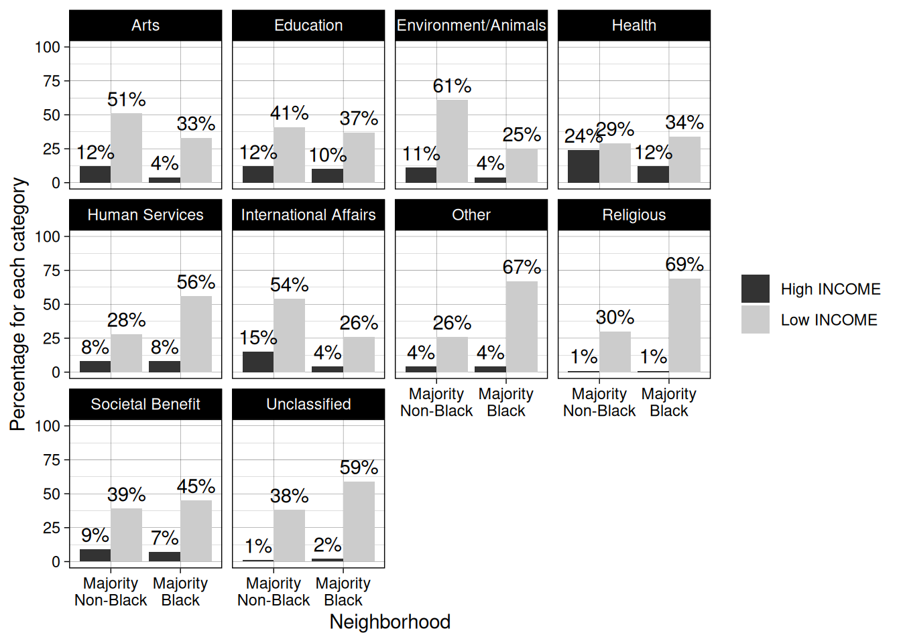
this includes all 4,082 organizations
df_simplified %>% group_by(NTEE_text) %>%summarize(count = n()) %>%
mutate(Percentage = round(count/sum(count)*100, digits = 2)) %>%
arrange(NTEE_text)## # A tibble: 10 × 3
## NTEE_text count Percentage
## <chr> <int> <dbl>
## 1 Arts 326 8.57
## 2 Education 411 10.8
## 3 Environment/Animals 76 2
## 4 Health 302 7.94
## 5 Human Services 1126 29.6
## 6 International Affairs 46 1.21
## 7 Other 27 0.71
## 8 Religious 891 23.4
## 9 Societal Benefit 513 13.5
## 10 Unclassified 87 2.29Total_NTEE <-df_simplified %>% group_by(NTEE_text) %>%summarize(total_count = n()) %>%
arrange(NTEE_text)df_simplified %>%
group_by(NTEE_text, Neighborhood) %>%
summarize(count = n()) %>%
mutate(NTEE_text = as_factor(NTEE_text)) %>%
ggplot(aes(x = fct_reorder(NTEE_text, count, min), y = count , fill = Neighborhood)) +
scale_fill_viridis_d() +
geom_col(position =position_dodge(width = .9)) +
ylab ("Number of Organizations") +
theme_linedraw() +
theme(axis.text.x = element_text(angle = 60, vjust = .5),
axis.title.x = element_blank()) +
scale_fill_grey()## `summarise()` has regrouped the output.
## Scale for fill is already present. Adding another scale for fill, which will
## replace the existing scale.
## ℹ Summaries were computed grouped by NTEE_text and Neighborhood.
## ℹ Output is grouped by NTEE_text.
## ℹ Use `summarise(.groups = "drop_last")` to silence this message.
## ℹ Use `summarise(.by = c(NTEE_text, Neighborhood))` for per-operation grouping
## (`?dplyr::dplyr_by`) instead.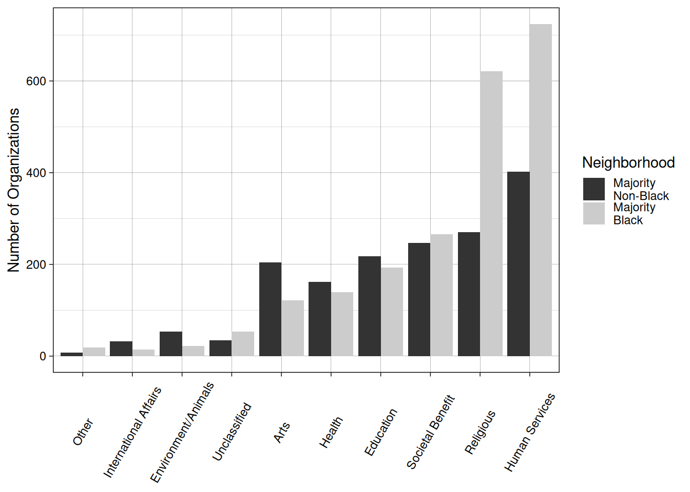
This includes all 4,082 organizations There was no removal of organizations based on asset amount, just to get a sense of what oganizations are in Baltimore.
plot2 <- df_simplified %>%
mutate(NTEE_text = as_factor(NTEE_text),
NTEE_text = forcats::fct_relevel(NTEE_text, "International Affairs", "Environment/Animals", "Arts", "Religious", "Health","Education", "Societal Benefit", "Human Services", "Other", "Unclassified" )) %>%
group_by(NTEE_text, Neighborhood, ASSET_High_text) %>%
summarize(count = n()) %>%
ggplot(aes(x = NTEE_text, y = count , fill = Neighborhood)) +
geom_col(position =position_dodge(width = .9)) +
facet_grid(rows = vars(ASSET_High_text)) +
ylab ("Number of Organizations") +
theme_linedraw() +
theme(axis.text.x = element_text(angle = 60, vjust = .5),
axis.title.x = element_blank()) +
scale_fill_grey()## `summarise()` has regrouped the output.
## ℹ Summaries were computed grouped by NTEE_text, Neighborhood, and
## ASSET_High_text.
## ℹ Output is grouped by NTEE_text and Neighborhood.
## ℹ Use `summarise(.groups = "drop_last")` to silence this message.
## ℹ Use `summarise(.by = c(NTEE_text, Neighborhood, ASSET_High_text))` for
## per-operation grouping (`?dplyr::dplyr_by`) instead.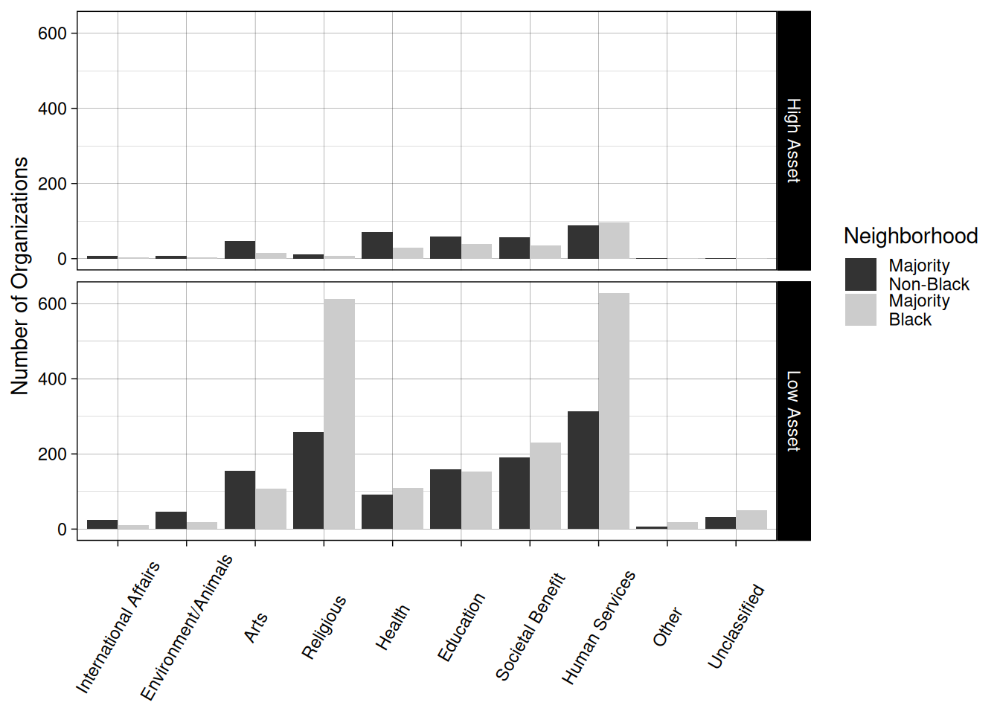
This includes all 4,082 organizations There was no removal of organizations based on asset amount, just to get a sense of what oganizations are in Baltimore.
plot2 <- df_simplified %>%
mutate(NTEE_text = as_factor(NTEE_text),
NTEE_text = forcats::fct_relevel(NTEE_text, "International Affairs", "Environment/Animals", "Arts", "Religious", "Health","Education", "Societal Benefit", "Human Services", "Other", "Unclassified" )) %>%
group_by(NTEE_text, Neighborhood, INCOME_High_text) %>%
summarize(count = n()) %>%
ggplot(aes(x = NTEE_text, y = count , fill = Neighborhood)) +
geom_col(position =position_dodge(width = .9)) +
facet_grid(rows = vars(INCOME_High_text)) +
ylab ("Number of Organizations") +
theme_linedraw() +
theme(axis.text.x = element_text(angle = 60, vjust = .5),
axis.title.x = element_blank()) +
scale_fill_grey()## `summarise()` has regrouped the output.
## ℹ Summaries were computed grouped by NTEE_text, Neighborhood, and
## INCOME_High_text.
## ℹ Output is grouped by NTEE_text and Neighborhood.
## ℹ Use `summarise(.groups = "drop_last")` to silence this message.
## ℹ Use `summarise(.by = c(NTEE_text, Neighborhood, INCOME_High_text))` for
## per-operation grouping (`?dplyr::dplyr_by`) instead.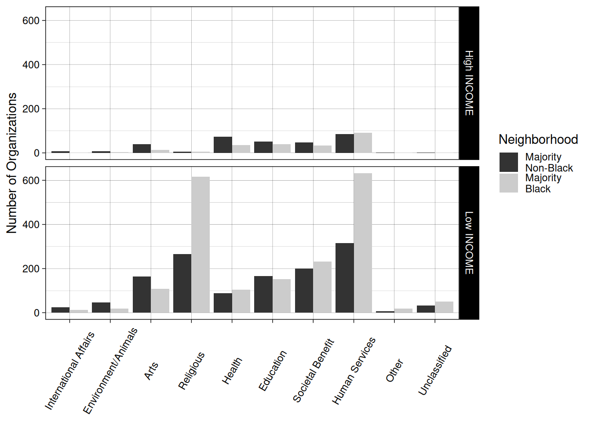
Based on Asset Amount (F990_TOTAL_ASSETS_RECENT)
High_counts <- df_simplified %>%
mutate(NTEE_text = as_factor(NTEE_text),
NTEE_text = forcats::fct_relevel(NTEE_text, "International Affairs", "Environment/Animals", "Arts", "Religious", "Health","Education", "Societal Benefit", "Human Services", "Other", "Unclassified" )) %>%
summarize(count = n(), .by = c(NTEE_text, ASSET_High_text)) %>% filter(ASSET_High_text == "High Asset")
High_counts## # A tibble: 10 × 3
## NTEE_text ASSET_High_text count
## <fct> <chr> <int>
## 1 Health High Asset 101
## 2 Human Services High Asset 184
## 3 Arts High Asset 63
## 4 Education High Asset 99
## 5 Religious High Asset 20
## 6 Societal Benefit High Asset 92
## 7 International Affairs High Asset 11
## 8 Other High Asset 2
## 9 Environment/Animals High Asset 12
## 10 Unclassified High Asset 3full_join(Total_NTEE, High_counts, join_by(NTEE_text)) %>%
mutate("Percentage_of_each_code" = round(count/total_count *100, digits = 2)) %>%
arrange(NTEE_text) ## # A tibble: 10 × 5
## NTEE_text total_count ASSET_High_text count Percentage_of_each_c…¹
## <chr> <int> <chr> <int> <dbl>
## 1 Arts 326 High Asset 63 19.3
## 2 Education 411 High Asset 99 24.1
## 3 Environment/Animals 76 High Asset 12 15.8
## 4 Health 302 High Asset 101 33.4
## 5 Human Services 1126 High Asset 184 16.3
## 6 International Affai… 46 High Asset 11 23.9
## 7 Other 27 High Asset 2 7.41
## 8 Religious 891 High Asset 20 2.24
## 9 Societal Benefit 513 High Asset 92 17.9
## 10 Unclassified 87 High Asset 3 3.45
## # ℹ abbreviated name: ¹Percentage_of_each_codeBased on BMF_ASSET_CODE (Where 5 means >=500,000)
High_counts <- df_simplified %>%
mutate(NTEE_text = as_factor(NTEE_text),
NTEE_text = forcats::fct_relevel(NTEE_text, "International Affairs", "Environment/Animals", "Arts", "Religious", "Health","Education", "Societal Benefit", "Human Services", "NA" )) %>%
mutate(ASSET_CD_High = case_when(BMF_ASSET_CODE >= 5 ~ "High",
BMF_ASSET_CODE < 5 ~ "Low")) %>%
group_by(NTEE_text, ASSET_CD_High) %>%
summarize(count = n()) %>% filter(ASSET_CD_High == "High") %>%
mutate(NTEE_text = str_replace(string = NTEE_text, pattern = "NA", replacement = "Unclassified"))## Warning: There was 1 warning in `mutate()`.
## ℹ In argument: `NTEE_text = forcats::fct_relevel(...)`.
## Caused by warning:
## ! 1 unknown level in `f`: NA## `summarise()` has regrouped the output.
## ℹ Summaries were computed grouped by NTEE_text and ASSET_CD_High.
## ℹ Output is grouped by NTEE_text.
## ℹ Use `summarise(.groups = "drop_last")` to silence this message.
## ℹ Use `summarise(.by = c(NTEE_text, ASSET_CD_High))` for per-operation grouping
## (`?dplyr::dplyr_by`) instead.## # A tibble: 10 × 3
## # Groups: NTEE_text [10]
## NTEE_text ASSET_CD_High count
## <chr> <chr> <int>
## 1 International Affairs High 11
## 2 Environment/Animals High 12
## 3 Arts High 63
## 4 Religious High 25
## 5 Health High 100
## 6 Education High 99
## 7 Societal Benefit High 91
## 8 Human Services High 186
## 9 Unclassified High 3
## 10 Other High 2full_join(Total_NTEE, High_counts, join_by(NTEE_text)) %>%
mutate("Percentage_of_each_code" = round(count/total_count *100, digits = 2)) %>%
arrange(NTEE_text) ## # A tibble: 10 × 5
## NTEE_text total_count ASSET_CD_High count Percentage_of_each_code
## <chr> <int> <chr> <int> <dbl>
## 1 Arts 326 High 63 19.3
## 2 Education 411 High 99 24.1
## 3 Environment/Animals 76 High 12 15.8
## 4 Health 302 High 100 33.1
## 5 Human Services 1126 High 186 16.5
## 6 International Affairs 46 High 11 23.9
## 7 Other 27 High 2 7.41
## 8 Religious 891 High 25 2.81
## 9 Societal Benefit 513 High 91 17.7
## 10 Unclassified 87 High 3 3.45BMF_ASSET_CODE was ASSET_CD in older raw files
Count_by_neighborhood_type <- df_simplified %>%
mutate(NTEE_text = as_factor(NTEE_text),
NTEE_text = forcats::fct_na_value_to_level(NTEE_text, level = "Unclassified"),
NTEE_text = forcats::fct_relevel(NTEE_text, "International Affairs", "Environment/Animals", "Arts", "Religious", "Health","Education", "Societal Benefit", "Human Services", "Unclassified")) %>%
mutate(ASSET_CD_High = case_when(BMF_ASSET_CODE >= 5 ~ "High",
BMF_ASSET_CODE < 5 ~ "Low")) %>%
summarize(count = n(), .by = c(NTEE_text, Majority_AA)) %>% arrange(NTEE_text)
Count_by_neighborhood_type## # A tibble: 20 × 3
## NTEE_text Majority_AA count
## <fct> <chr> <int>
## 1 International Affairs Yes 14
## 2 International Affairs No 32
## 3 Environment/Animals No 54
## 4 Environment/Animals Yes 22
## 5 Arts No 204
## 6 Arts Yes 122
## 7 Religious No 270
## 8 Religious Yes 621
## 9 Health Yes 140
## 10 Health No 162
## 11 Education No 218
## 12 Education Yes 193
## 13 Societal Benefit Yes 266
## 14 Societal Benefit No 247
## 15 Human Services Yes 724
## 16 Human Services No 402
## 17 Unclassified No 34
## 18 Unclassified Yes 53
## 19 Other Yes 19
## 20 Other No 8renamed_perc_data <-full_join(Total_NTEE, Count_by_neighborhood_type) %>%
mutate("Percentage_of_each_code" = round(count/total_count *100, digits = 2)) %>%
arrange(NTEE_text) %>%
pivot_wider(names_from = Majority_AA, values_from = count:Percentage_of_each_code) %>%
dplyr::select(NTEE_text, total_count, count_Yes, Percentage_of_each_code_Yes, count_No, Percentage_of_each_code_No) %>%
pivot_longer(-NTEE_text) %>%
mutate(name = case_when(
name == "total_count" ~ "Total",
name == "count_Yes" ~"Count_Majority_Black",
name == "Percentage_of_each_code_Yes" ~ "Perc_Maj_Black",
name == "count_No" ~ "Count_Non_Black",
name == "Percentage_of_each_code_No" ~ "Perc_Non_Black"))## Joining with `by = join_by(NTEE_text)` renamed_perc_data %>%
pivot_wider(names_from = name, values_from = value) %>%
mutate(ratio = Count_Majority_Black/Count_Non_Black)## # A tibble: 10 × 7
## NTEE_text Total Count_Majority_Black Perc_Maj_Black Count_Non_Black
## <chr> <dbl> <dbl> <dbl> <dbl>
## 1 Arts 326 122 37.4 204
## 2 Education 411 193 47.0 218
## 3 Environment/Animals 76 22 29.0 54
## 4 Health 302 140 46.4 162
## 5 Human Services 1126 724 64.3 402
## 6 International Affa… 46 14 30.4 32
## 7 Other 27 19 70.4 8
## 8 Religious 891 621 69.7 270
## 9 Societal Benefit 513 266 51.8 247
## 10 Unclassified 87 53 60.9 34
## # ℹ 2 more variables: Perc_Non_Black <dbl>, ratio <dbl>Now to take a look at if 50% African American makes sense. What do the neighborhoods look like?
Name was neighborhood name in the old data
# get the neighborhood values if no removing rows for nonprofits with NA or zero assets
neighborhood_AAperc <- df_simplified %>%
distinct(Name, Percent_AA)
# get the neighborhood values after removing rows for nonprofits with NA or zero assets
neighborhood_AAperc_nozero <- df_simplified_no_zero %>%
distinct(Name, Percent_AA)We can see that there are many neighborhoods that have a more extreme percentage.
# get the neighborhood values if no removing rows for nonprofits with NA or zero assets
neighborhood_AAperc%>% pull(Percent_AA) %>% hist(main = "Distribution of Black population percentages across Baltimore neighborhoods")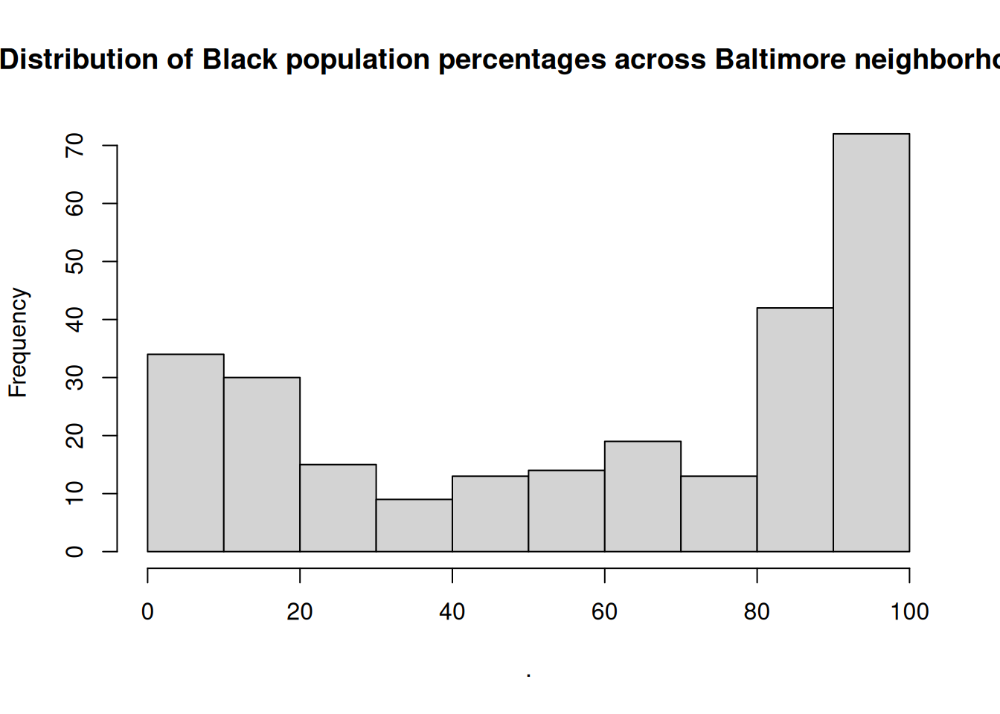
# get the neighborhood values after removing rows for nonprofits with NA or zero assets
neighborhood_AAperc_nozero %>% pull(Percent_AA) %>% hist(main = "Distribution of Black population percentages across Baltimore neighborhoods\n (removed neighborhoods with only zero or NA assets)")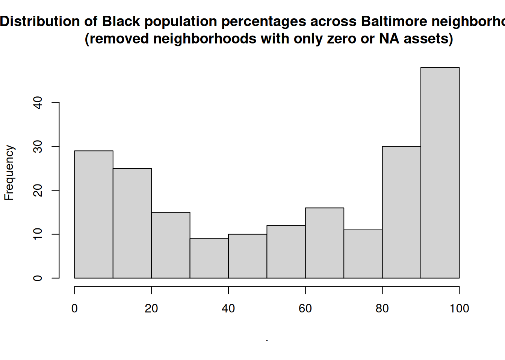
#start with the raw neighborhood statistical area data and use it to get population estimates
neighborhoods <- read_csv(here::here("data", "Neighborhood_Statistical_Area_(NSA)_Boundaries.csv"))## Rows: 279 Columns: 60
## ── Column specification ────────────────────────────────────────────────────────
## Delimiter: ","
## chr (1): Name
## dbl (59): OBJECTID, Population, White, Blk_AfAm, AmInd_AkNa, Asian, NatHaw_P...
##
## ℹ Use `spec()` to retrieve the full column specification for this data.
## ℹ Specify the column types or set `show_col_types = FALSE` to quiet this message.Black_majority_neighborhoods <-neighborhoods%>% mutate(Percent_AA =
round(Blk_AfAm/Population*100, digits = 2)) %>%filter(Percent_AA>=50) %>% pull(Name)
length(Black_majority_neighborhoods) # number of black majority neighborhoods## [1] 163Not_Black_majority_neighborhoods <-neighborhoods%>% mutate(Percent_AA =
round(Blk_AfAm/Population*100, digits = 2)) %>% filter(Percent_AA<50) %>% pull(Name)
length(Not_Black_majority_neighborhoods)## [1] 108pop_in_black_neighborhoods <-filter(neighborhoods, Name %in% Black_majority_neighborhoods) %>% pull(Population) %>% sum()
# estimate of population living in Black majority neighborhoods
pop_in_black_neighborhoods## [1] 360205pop_not_in_black_neighborhoods <- filter(neighborhoods, !(Name %in% Black_majority_neighborhoods)) %>% pull(Population) %>% sum(na.rm = TRUE)
#estimate of population living in not Black majority neighborhoods
pop_not_in_black_neighborhoods## [1] 225477## [1] 61.5018